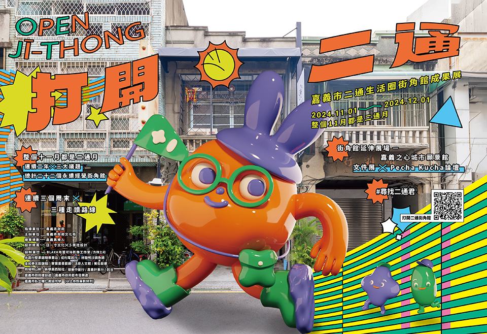
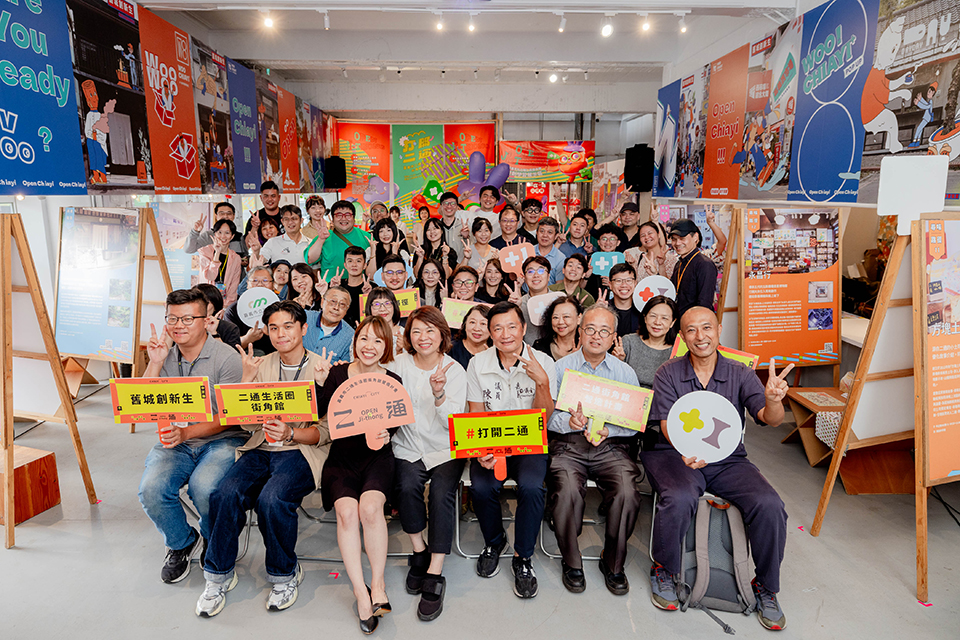
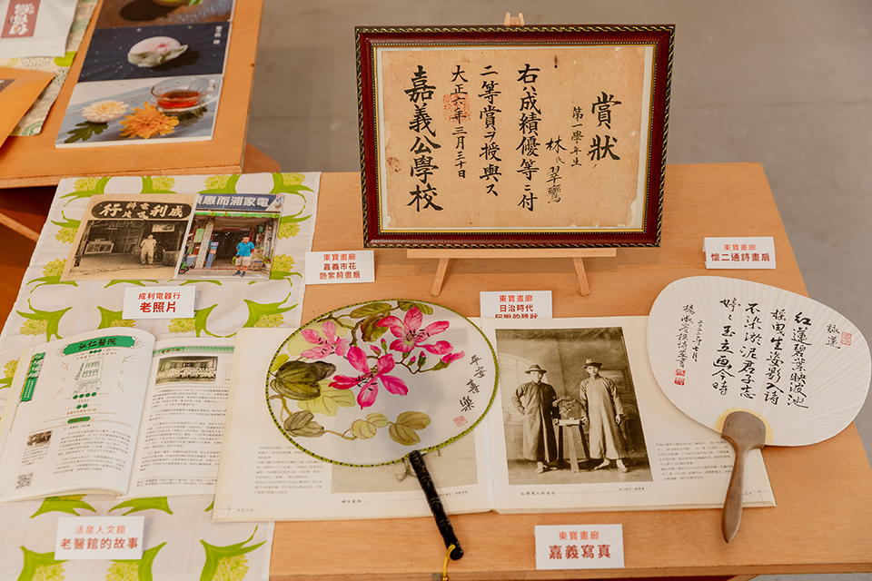
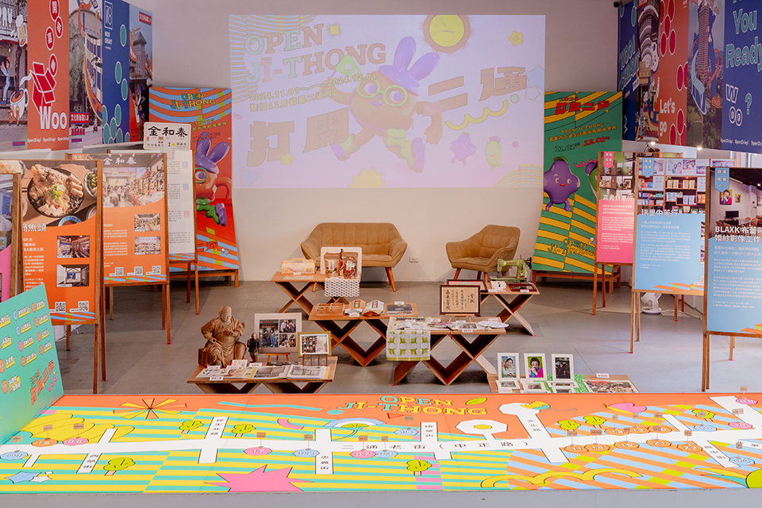
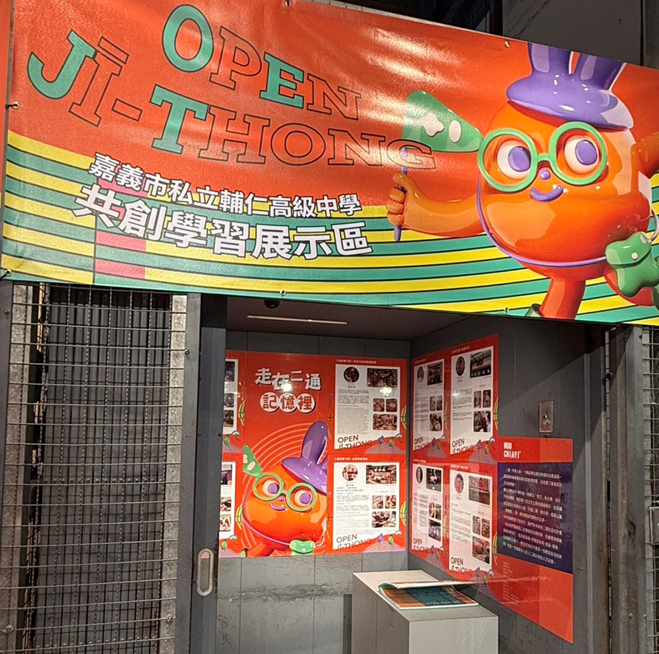
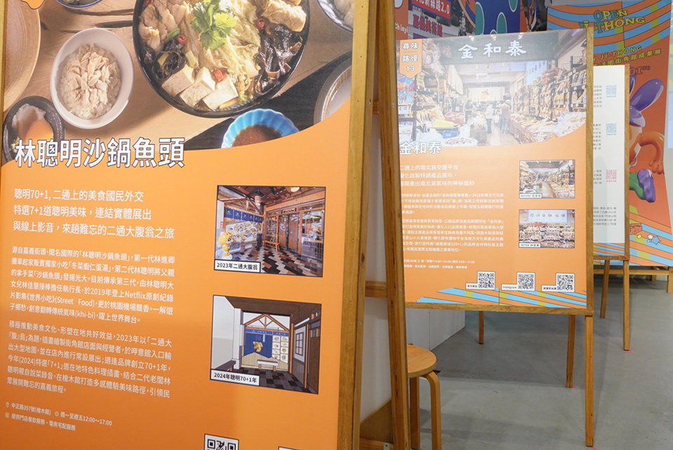
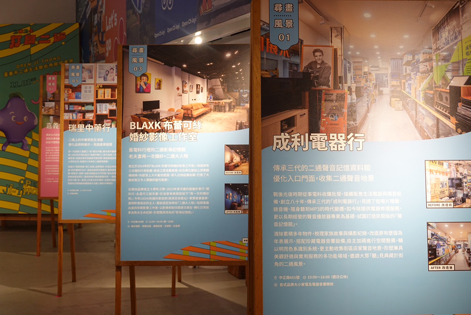

揪踅街 Roaming
二通街角館營造計畫
呼應市府十大旗艦計畫「舊城創新生」藍圖，文化局以中正路與鄰近街道區域作為「城市博物館」延伸展場，經由徵選補助，媒合專業團隊顧問輔導，協助在地店家梳理家族故事，轉化為展示陳列與體驗模式。透過專責輔導委員與策略行銷推廣，打造街角館主題IP「二通君」，推出「街角館文化大使」計畫，並連結私立輔仁中學合作，使在地文化能量深入校園與常民生活。歷經兩年共營造22個主題街角館，輔以跨局處共好同心協力，帶動場域活化、創造體驗和文旅創新。



今年（2024）以「二通街角館‧營造再進化」為核心，透過「尋畫風景」、「尋藝探奇」、「尋味路徑」三大策劃主軸，包含 BLAXK 布蕾可絲影像工作室、方塊土司、永昌行堅果雜糧專賣店、成利電器行、林聰明沙鍋魚頭、金和泰五穀雜糧、東寶書畫藝廊、活泉人文館、美街藝廊、桃城明山軒、新華美西裝社、瑞里中藥行、嘉義針車行及穀谷共14間街角館，凝聚地方能量，再現歷史深度與文化氛圍，形塑永續經營的街角館群，提前揭示「諸羅建城 320+1 」的精彩。



「整個十一月都是二通月」的活動，不只是走讀，更深掘文化底蘊、保存在地故事。民眾除可親臨二十二家街角館現場，包含文件展、Pecha Kucha論壇、三種路線六場週末走讀，深度認識營造前後歷程與店家故事。


| 主辦單位 ｜ | ｜ | 嘉義市政府文化局 |
|---|---|---|
| 承辦單位 ｜ | ｜ | 嘉義異鄉人 |
| 合作單位 ｜ | ｜ | BLAXK布蕾可絲影像工作室、方塊土司、永昌行堅果雜糧專賣店、成利電器行、林聰明沙鍋魚頭、金和泰五穀雜糧、東寶書畫藝廊、活泉人文館、美街藝廊、桃城明山軒、新華美西裝社、瑞里中藥行、嘉義針車行、穀谷 |
| 暸解更多 ｜ | ｜ | 官方網站 |